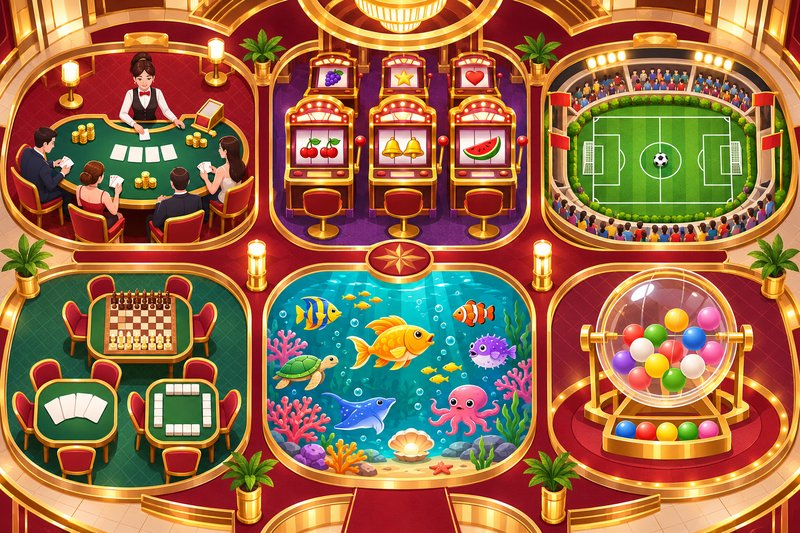

大撈家娛樂城六大遊戲館導覽：真人、電子、體育、棋牌、捕魚與彩票怎麼挑
第一次打開線上娛樂平台，最常遇到的困擾不是「沒東西玩」，而是選項太多、不知道從哪裡開始。與其每個館都點進去試，不如先弄清楚各分類的玩法差異，再依自己的習慣挑選。
大撈家娛樂城把遊戲整理成六大專區，以下依序介紹每個分類的特色，以及進場前值得先確認的地方。
一、真人娛樂：喜歡看牌局過程的首選
真人專區由荷官即時開局，玩法包含百家樂、龍虎、骰寶與輪盤。平台列有 T9、DG、歐博、WM 等真人館，各館的桌台介面與限紅不同。
- 適合：喜歡臨場感、想看實際發牌過程的玩家
- 進場前：先查看投注限額與結算說明
二、電子老虎機：主題最多元的分類
電子專區集合 ATG、RSG、富遊、QT、BNG 等館別。每款老虎機的轉輪符號、連線方式與特殊獎勵設計都不一樣。
- 適合：喜歡節奏快、畫面豐富的玩家
- 進場前：打開賠付表，了解功能觸發條件
三、體育投注：跟著賽事一起看
體育專區列有新 Super、PM、WG 等體育館，提供讓分、大小、全場或半場及過關等選項。
選擇體育玩法的小提醒
- 核對比賽時間與投注內容
- 賠率以確認投注當下的資訊為準
四、棋牌遊戲：重視規則與判斷
棋牌專區適合喜歡動腦的玩家。建議先從規則、操作流程與勝負判定開始熟悉，再挑選有興趣的牌局。
五、捕魚遊戲：輕鬆的射擊玩法
捕魚專區列有 FG、DB、SPLUS 與好路等館別。各款遊戲的炮台設定、魚種與特殊功能不同，記得先看清楚每次射擊的成本。
六、彩票遊戲：依期別查詢開獎
彩票專區列有 9K、PN、SUPER、DB 與 GC 等館別。參與前請核對遊戲名稱、期別與截止時間。
結語：先了解，再選擇
六大分類各有節奏，沒有哪一種一定最好。先讀玩法介紹、比較規則，再安排適合自己的娛樂時間，才是長久又輕鬆的玩法。
※ 未滿18歲請勿參與涉及金錢的遊戲。遊戲結果具不確定性，可能造成金錢損失，請設定時間與預算、理性娛樂，並遵守所在地法規。